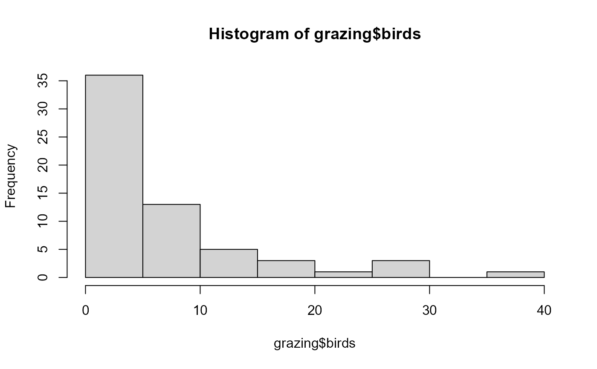

The function BerG() defines the
Bernoulli-geometric distribution,
a two parameter distribution,
for a gamlss.family object to be used in GAMLSS
fitting using the function gamlss().
BerG(mu.link = "log", sigma.link = "log")Returns a gamlss.family object which can be used
to fit a BerG distribution
in the gamlss() function.
The BerG distribution with parameters \(\mu\) and \(\sigma\) has a support 0, 1, 2, ... and mass function given by
\(f(x | \mu, \sigma) = \frac{(1-\mu+\sigma)}{(1+\mu+\sigma)}\) if \(x=0\),
\(f(x | \mu, \sigma) = 4 \mu \frac{(\mu+\sigma-1)^{x-1}}{(\mu+\sigma+1)^{x+1}}\) if \(x=1, 2, ...\),
with \(\mu > 0\), \(\sigma > 0\) and \(\sigma>|\mu-1|\).
Bourguignon, M., & de Medeiros, R. M. (2022). A simple and useful regression model for fitting count data. Test, 31(3), 790-827.
# Example 1
# Generating some random values with
# known mu and sigma
y <- rBerG(n=500, mu=0.75, sigma=0.5)
# Fitting the model
library(gamlss)
#> Loading required package: splines
#> Loading required package: gamlss.data
#>
#> Attaching package: ‘gamlss.data’
#> The following object is masked from ‘package:datasets’:
#>
#> sleep
#> Loading required package: gamlss.dist
#> Loading required package: nlme
#> Loading required package: parallel
#> ********** GAMLSS Version 5.5-0 **********
#> For more on GAMLSS look at https://www.gamlss.com/
#> Type gamlssNews() to see new features/changes/bug fixes.
mod1 <- gamlss(y~1, family=BerG,
control=gamlss.control(n.cyc=500, trace=FALSE))
# Extracting the fitted values for mu and sigma
exp(coef(mod1, what="mu"))
#> (Intercept)
#> 0.7759974
exp(coef(mod1, what="sigma"))
#> (Intercept)
#> 0.5130897
# Example 2
# Generating random values under some model
# A function to simulate a data set with Y ~ BerG
gendat <- function(n) {
x1 <- runif(n)
x2 <- runif(n)
x3 <- runif(n)
x4 <- runif(n)
mu <- exp(1 + 1.2*x1 + 0.2*x2)
sigma <- exp(2 + 1.5*x3 + 1.5*x4)
y <- rBerG(n=n, mu=mu, sigma=sigma)
data.frame(y=y, x1=x1, x2=x2, x3=x3, x4=x4)
}
set.seed(16494786)
datos <- gendat(n=500)
mod2 <- gamlss(y~x1+x2, sigma.fo=~x3+x4, family=BerG, data=datos,
control=gamlss.control(n.cyc=500, trace=TRUE))
#> GAMLSS-RS iteration 1: Global Deviance = 1746.261
#> GAMLSS-RS iteration 2: Global Deviance = 1743.99
#> GAMLSS-RS iteration 3: Global Deviance = 1743.771
#> GAMLSS-RS iteration 4: Global Deviance = 1743.734
#> GAMLSS-RS iteration 5: Global Deviance = 1743.726
#> GAMLSS-RS iteration 6: Global Deviance = 1743.725
#> GAMLSS-RS iteration 7: Global Deviance = 1743.724
summary(mod2)
#> Warning: summary: vcov has failed, option qr is used instead
#> ******************************************************************
#> Family: c("BerG", "Bernoulli-geometric (BerG) distribution")
#>
#> Call: gamlss(formula = y ~ x1 + x2, sigma.formula = ~x3 + x4, family = BerG,
#> data = datos, control = gamlss.control(n.cyc = 500, trace = TRUE))
#>
#> Fitting method: RS()
#>
#> ------------------------------------------------------------------
#> Mu link function: log
#> Mu Coefficients:
#> Estimate Std. Error t value Pr(>|t|)
#> (Intercept) 1.1370 0.2055 5.534 5.08e-08 ***
#> x1 1.0542 0.2804 3.759 0.000191 ***
#> x2 0.2145 0.2490 0.861 0.389393
#> ---
#> Signif. codes: 0 ‘***’ 0.001 ‘**’ 0.01 ‘*’ 0.05 ‘.’ 0.1 ‘ ’ 1
#>
#> ------------------------------------------------------------------
#> Sigma link function: log
#> Sigma Coefficients:
#> Estimate Std. Error t value Pr(>|t|)
#> (Intercept) 2.0247 0.1369 14.789 < 2e-16 ***
#> x3 1.2461 0.2034 6.127 1.83e-09 ***
#> x4 1.7665 0.2113 8.361 6.30e-16 ***
#> ---
#> Signif. codes: 0 ‘***’ 0.001 ‘**’ 0.01 ‘*’ 0.05 ‘.’ 0.1 ‘ ’ 1
#>
#> ------------------------------------------------------------------
#> No. of observations in the fit: 500
#> Degrees of Freedom for the fit: 6
#> Residual Deg. of Freedom: 494
#> at cycle: 7
#>
#> Global Deviance: 1743.724
#> AIC: 1755.724
#> SBC: 1781.012
#> ******************************************************************
# Example using the dataset grazing from the bergreg package
# https://github.com/rdmatheus/bergreg
# This example corresponds to example 5.1
# presented by Bourguignon & Medeiros (2022)
# A simple and useful regression model for fitting count data
data("grazing")
hist(grazing$birds)

mod3 <- gamlss(birds ~ when + grazed,
sigma.fo=~1,
family=BerG, data=grazing,
control=gamlss.control(n.cyc=500, trace=TRUE))
#> GAMLSS-RS iteration 1: Global Deviance = 16648.84
#> GAMLSS-RS iteration 2: Global Deviance = 16648.52
#> GAMLSS-RS iteration 3: Global Deviance = 16648.37
#> GAMLSS-RS iteration 4: Global Deviance = 16648.32
#> GAMLSS-RS iteration 5: Global Deviance = 16648.32
summary(mod3)
#> ******************************************************************
#> Family: c("BerG", "Bernoulli-geometric (BerG) distribution")
#>
#> Call: gamlss(formula = birds ~ when + grazed, sigma.formula = ~1,
#> family = BerG, data = grazing, control = gamlss.control(n.cyc = 500,
#> trace = TRUE))
#>
#> Fitting method: RS()
#>
#> ------------------------------------------------------------------
#> Mu link function: log
#> Mu Coefficients:
#> Estimate Std. Error t value Pr(>|t|)
#> (Intercept) 2.1461 0.1698 12.642 < 2e-16 ***
#> whenAfter 0.7472 0.3174 2.354 0.02199 *
#> grazedFeral -0.9188 0.3001 -3.062 0.00333 **
#> ---
#> Signif. codes: 0 ‘***’ 0.001 ‘**’ 0.01 ‘*’ 0.05 ‘.’ 0.1 ‘ ’ 1
#>
#> ------------------------------------------------------------------
#> Sigma link function: log
#> Sigma Coefficients:
#> Estimate Std. Error t value Pr(>|t|)
#> (Intercept) 2.1263 0.1717 12.38 <2e-16 ***
#> ---
#> Signif. codes: 0 ‘***’ 0.001 ‘**’ 0.01 ‘*’ 0.05 ‘.’ 0.1 ‘ ’ 1
#>
#> ------------------------------------------------------------------
#> No. of observations in the fit: 62
#> Degrees of Freedom for the fit: 4
#> Residual Deg. of Freedom: 58
#> at cycle: 5
#>
#> Global Deviance: 16648.32
#> AIC: 16656.32
#> SBC: 16664.83
#> ******************************************************************